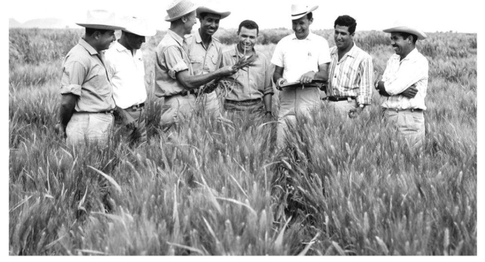

Dr. Norman Borluag
the man who saved a million lives

Dr.Noran Borliaug, third from the left, train biologist in mexico on how to increase wheat yields
-pat of his life-long war on hunger
Here is a time of Dr. Borlaug's life:
- 1914 - born in cresco. lowa
- 1933 - lives his family land to attain
universisity of Minnesota
thanks to
depresion era program known as the
"the
national Youth Adminstratration
- 1935 - has to stop school and save more
money.works in
a civilian convention corps,
helping starving americans
how food changed them",he
said. br"All ofthis left scares on me,"ants.
- 1941 - tried to enroll in the military
after the peral attact .
but is rejected instead. the
military as his lab to work n water
proof glue.DDT to control
maleria, disinfectants and other
aplied science.
- 1942 - Receives a PHD in genetics and
plants pathology
- 1944 - rejects 100% salary increase from
dupants leaves behind
his pregnant wife and flies
to mexico to head a new plant pATHOLOGY
program over the next 16 years
his team breath 6,000 different stains
of disease
risistant whaet- different vareity
for each major climate Earth
- 1945- discover a way to grow wheat twice each
season .doubling wheat yieds
- 1970- recieved the norble peace pric
- 1983- help 7 african countries dramaticaly increase their
maize and surgum yeilds
- 1984- becomes a distinguisher proffesor at taxas
A&M University
- 2009- dies at the age of 95.
if you have time you should more about this incredible on his Wikipedia entry